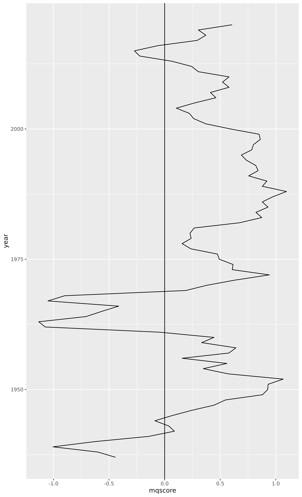
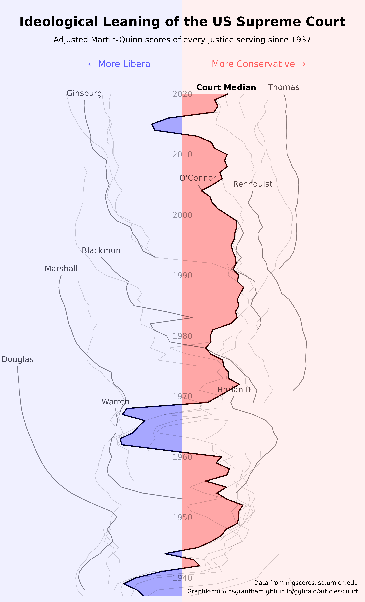

This article provides an example of using geom_braid() with a flipped set of aesthetics y, xmin, xmax instead of the usual x, ymin, ymax. This change is primarily motivated by the fact that we are visualizing judicial ideology scores, from strongly liberal to strongly conservative, and we are accustomed to interpreting ideologies on the left-right political spectrum.
How has the ideology of the US Supreme Court changed over time?
A common way to measure judicial ideology is to use Martin-Quinn scores.
Developed by political science researchers Andrew Martin and Kevin Quinn in 2002, a Martin-Quinn score is a summary of a justice’s voting record in a given year using a Bayesian model. Positive scores indicate a conservative ideology, negative scores indicate a liberal ideology. The further a score is from zero, the stronger the ideology.
In this article, we’ll work with a couple datasets that Martin and Quinn maintain at mqscores.lsa.umich.edu.
Court Ideology
We’ll start with court.csv, which provides the Martin-Quinn score of a hypothetical “median justice” each year since 1937.
library(ggplot2)
library(ggbraid)
library(readr)
library(dplyr)
court <- read_csv(
"https://mqscores.lsa.umich.edu/media/2020/court.csv",
col_types = cols_only(term = col_character(), med = col_double())
) %>%
mutate(year = as.integer(substr(term, 1, 4))) %>%
group_by(year) %>%
summarize(mqscore = median(med), .groups = "drop") %>%
arrange(desc(year))
court
#> # A tibble: 84 × 2
#> year mqscore
#> <int> <dbl>
#> 1 2020 0.607
#> 2 2019 0.303
#> 3 2018 0.371
#> 4 2017 0.293
#> 5 2016 -0.058
#> 6 2015 -0.272
#> 7 2014 -0.224
#> 8 2013 0.066
#> 9 2012 0.244
#> 10 2011 0.302
#> # … with 74 more rows
#> # ℹ Use `print(n = ...)` to see more rowsLet’s plot the data in court by mapping year to x, mqscore to y, and applying the line geometry with geom_line(). Also, place a horizontal line at yintercept = 0 with geom_hline() to better identify the point at which an ideology
ggplot(court, aes(x = year, y = mqscore)) +
geom_line() +
geom_hline(yintercept = 0)A nice, simple plot.
Another way to convey this relationship is to instead map mqscore to x and year to y. With this mapping, Martin-Quinn scores that indicate a conservative ideology are to the right of zero and scores that indicate a liberal ideology are to the left. This matches the left-right political spectrum that we are accustomed to, although it does put a temporal variable on the y axis which can feel strange.
In any case, let’s give it a try.
Starting with the previous code, switch year with mqscore, and replace geom_hline() with geom_vline() and yintercept = 0 with xintercept = 0.
ggplot(court, aes(x = mqscore, y = year)) +
geom_line() +
geom_vline(xintercept = 0)Hmmm, that isn’t right. What’s gone wrong?
The problem is that geom_line() connects observations in the order of the variable on the x axis. So, because we have mapped mqscore to x, geom_line() orders the data by mqscore before drawing lines between observations. That’s not what we want, we’d rather the geom leave the order as is.
To avoid this ordering behavior, we can use geom_path() in place of geom_line().
ggplot(court, aes(x = mqscore, y = year)) +
geom_path() +
geom_vline(xintercept = 0)
Much better.
But this plot could really use some color. We can use geom_braid() to fill the area between the “median justice” Martin-Quinn score line and the x intercept at 0.
ggplot(court, aes(x = mqscore, y = year)) +
geom_path() +
geom_vline(xintercept = 0) +
geom_braid(
aes(xmin = mqscore, xmax = 0, fill = mqscore < 0),
method = "line"
)Touching this up a bit, we can remove the vertical line at zero because it is no longer necessary, and we can remove the fill aesthetic legend because it doesn’t add any value. While we’re at it, let’s change the colors and add some transparency.
ggplot(court, aes(x = mqscore, y = year)) +
geom_path() +
geom_braid(
aes(xmin = mqscore, xmax = 0, fill = mqscore < 0),
method = "line",
alpha = 0.3
) +
scale_fill_manual(values = c("red", "blue")) +
guides(fill = "none")Voila.
Justice Ideology
Now it may also be valuable to include data from justices.csv, which provides the Martin-Quinn score of every justice each year since 1937.
justices <- read_csv(
"https://mqscores.lsa.umich.edu/media/2020/justices.csv",
col_types = cols_only(
term = col_integer(),
justiceName = col_character(),
post_med = col_double()
)
) %>%
rename(year = term, name = justiceName, mqscore = post_med) %>%
arrange(desc(year), name)
justices
#> # A tibble: 764 × 3
#> year name mqscore
#> <int> <chr> <dbl>
#> 1 2020 ACBarrett 0.981
#> 2 2020 BMKavanaugh 0.539
#> 3 2020 CThomas 3
#> 4 2020 EKagan -1.49
#> 5 2020 JGRoberts 0.498
#> 6 2020 NMGorsuch 1.1
#> 7 2020 SAAlito 2.15
#> 8 2020 SGBreyer -1.89
#> 9 2020 SSotomayor -3.94
#> 10 2019 BMKavanaugh 0.552
#> # … with 754 more rows
#> # ℹ Use `print(n = ...)` to see more rowsLet’s add individual Martin-Quinn score lines for every justice.
ggplot(court, aes(x = mqscore, y = year)) +
geom_path() +
geom_braid(
aes(xmin = mqscore, xmax = 0, fill = mqscore < 0),
method = "line",
alpha = 0.3
) +
geom_path(aes(group = name), data = justices, size = 0.3, alpha = 0.2) +
scale_fill_manual(values = c("red", "blue")) +
guides(fill = "none")Wow.
It should come as no surprise that individual justices hold much stronger ideologies than the hypothetical “median justice”. But I did not expect the spread to be quite so wide.
Now, the goal of this plot is not to communicate exact Martin-Quinn score values, but rather to convey the ideological lean of the court and its justices relative to one another. So let’s apply a function to pull the largest values closer to zero and push the smaller values under one slightly away from zero. We’ll call this function moderate() because it primarily reduces the extreme liberal and conservative ideology scores. And because we’ve altered the scores, let’s remove the x axis ticks and text.
moderate <- function(x) sign(x) * sqrt(abs(x))
ggplot(court, aes(x = moderate(mqscore), y = year)) +
geom_path() +
geom_braid(
aes(xmin = moderate(mqscore), xmax = 0, fill = moderate(mqscore) < 0),
method = "line",
alpha = 0.3
) +
geom_path(aes(group = name), data = justices, size = 0.3, alpha = 0.2) +
scale_fill_manual(values = c("red", "blue")) +
guides(fill = "none") +
labs(x = NULL) +
theme(
panel.grid.major.x = element_blank(),
panel.grid.minor.x = element_blank(),
axis.ticks.x = element_blank(),
axis.text.x = element_blank()
)This is looking better.
Let’s select a handful of justices to highlight.
selected_justice_names <- c(
"RBGinsburg" = "Ginsburg",
"HABlackmun" = "Blackmun",
"TMarshall" = "Marshall",
"JHarlan2" = "Harlan II",
"WHRehnquist" = "Rehnquist",
"SDOConnor" = "O'Connor",
"EWarren" = "Warren",
"CThomas" = "Thomas",
"WODouglas" = "Douglas"
)
selected_justices <- justices %>%
filter(name %in% names(selected_justice_names)) %>%
mutate(name = recode(name, !!! selected_justice_names))
selected_justices
#> # A tibble: 236 × 3
#> year name mqscore
#> <int> <chr> <dbl>
#> 1 2020 Thomas 3
#> 2 2019 Thomas 3.12
#> 3 2019 Ginsburg -2.81
#> 4 2018 Thomas 3.16
#> 5 2018 Ginsburg -2.83
#> 6 2017 Thomas 3.12
#> 7 2017 Ginsburg -2.79
#> 8 2016 Thomas 3.18
#> 9 2016 Ginsburg -2.74
#> 10 2015 Thomas 3.18
#> # … with 226 more rows
#> # ℹ Use `print(n = ...)` to see more rows
selected_justices_text <- selected_justices %>%
group_by(name) %>%
summarize(year = first(year), mqscore = first(mqscore), .groups = "drop")
selected_justices_text
#> # A tibble: 9 × 3
#> name year mqscore
#> <chr> <int> <dbl>
#> 1 Blackmun 1993 -1.92
#> 2 Douglas 1975 -7.94
#> 3 Ginsburg 2019 -2.81
#> 4 Harlan II 1970 0.769
#> 5 Marshall 1990 -4.29
#> 6 O'Connor 2005 0.069
#> 7 Rehnquist 2004 1.45
#> 8 Thomas 2020 3
#> 9 Warren 1968 -1.30Now add two new geom layers: geom_path() using selected_justices and geom_text() using selected_justices_text.
ggplot(court, aes(x = moderate(mqscore), y = year)) +
geom_path() +
geom_braid(
aes(xmin = moderate(mqscore), xmax = 0, fill = moderate(mqscore) < 0),
method = "line",
alpha = 0.3
) +
geom_path(aes(group = name), data = justices, size = 0.3, alpha = 0.2) +
geom_path(aes(group = name), data = selected_justices, size = 0.5, alpha = 0.4) +
geom_text(aes(label = name), data = selected_justices_text, size = 3, alpha = 0.7, vjust = -0.7) +
scale_fill_manual(values = c("red", "blue")) +
guides(fill = "none") +
labs(x = NULL) +
theme(
panel.grid.major.x = element_blank(),
panel.grid.minor.x = element_blank(),
axis.ticks.x = element_blank(),
axis.text.x = element_blank()
)Final Ruling
Let’s put some finishing touches on the plot.
decades <- data.frame(year = seq(1940, 2020, by = 10))
ggplot(court, aes(x = moderate(mqscore), y = year)) +
geom_path(size = 0.8) +
geom_braid(
aes(xmin = moderate(mqscore), xmax = 0, fill = moderate(mqscore) < 0),
method = "line",
alpha = 0.3
) +
geom_path(aes(group = name), data = justices, size = 0.3, alpha = 0.2) +
geom_path(aes(group = name), data = selected_justices, size = 0.5, alpha = 0.4) +
geom_text(aes(label = name), data = selected_justices_text, size = 4, alpha = 0.7, vjust = -0.7) +
geom_text(aes(label = year, x = 0), data = decades, size = 4, alpha = 0.4) +
annotate("rect", xmin = -Inf, xmax = 0, ymin = -Inf, ymax = Inf, fill = "blue", alpha = 0.06) +
annotate("rect", xmin = 0, xmax = Inf, ymin = -Inf, ymax = Inf, fill = "red", alpha = 0.06) +
annotate("text", x = 0, y = 2032, label = "Ideological Leaning of the US Supreme Court", fontface = "bold", size = 6.5) +
annotate("text", x = 0, y = 2029, label = "Adjusted Martin-Quinn scores of every justice serving since 1937", size = 4) +
annotate("text", x = 3, y = 1938.5, label = "Data from mqscores.lsa.umich.edu\nGraphic from nsgrantham.github.io/ggbraid/articles/court", size = 3, hjust = 1) +
annotate("text", x = -0.5, y = 2025, label = "← More Liberal", hjust = 1, color = "blue", size = 4.5, alpha = 0.6) +
annotate("text", x = 0.5, y = 2025, label = "More Conservative →", hjust = 0, color = "red", size = 4.5, alpha = 0.6) +
annotate("text", x = 0.75, y = 2021.1, label = "Court Median", fontface = "bold", size = 4) +
scale_x_continuous(limits = c(-3.05, 3.05), expand = c(0.01, 0.01)) +
scale_y_continuous(limits = c(NA, 2034.5), expand = c(0.01, 0.05)) +
scale_fill_manual(values = c("red", "blue")) +
guides(fill = "none") +
labs(x = NULL, y = NULL) +
theme_minimal() +
theme(
plot.margin = margin(0, 0, -3, -3),
panel.grid.major.y = element_blank(),
panel.grid.minor.y = element_blank(),
panel.grid.major.x = element_blank(),
panel.grid.minor.x = element_blank(),
axis.text.y = element_blank(),
axis.text.x = element_blank()
)